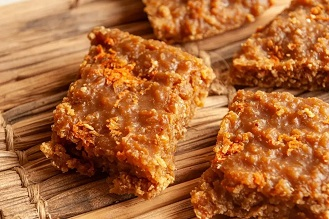
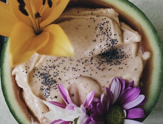
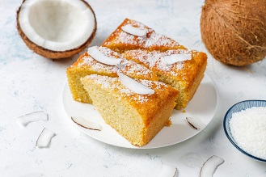

Matoritori

Ingredients
- 2 cups grated coconut (fresh or desiccated)
- 1 cup sugar
- 1/4 cup water
- 1 tsp vanilla extract (optional)
Instructions
- Make Syrup: In a pan, combine sugar and water. Heat until it forms a thick syrup.
- Add Coconut: Stir in grated coconut and cook on low heat, stirring constantly, until the mixture thickens and turns golden.
- Shape Candy: Remove from heat, spoon the mixture onto a greased surface, and shape into small mounds or squares.
- Cool: Let it cool completely before serving.
Malambe ice-cream

Ingredients
- 1 cup baobab fruit powder (malambe)
- 2 cups heavy cream
- 1 cup milk
- 3/4 cup sugar
- 1 tsp vanilla extract (optional)
- Pinch of salt
Instructions
- Mix Ingredients: In a bowl, whisk baobab powder, sugar, milk, and a pinch of salt until fully dissolved.
- Add Cream: Stir in heavy cream and vanilla extract. Mix well.
- Chill: Refrigerate the mixture for 2–4 hours to cool.
- Churn: Pour into an ice cream maker and churn according to the manufacturer's instructions.
- Freeze: Transfer to a container and freeze for 2–3 hours before serving.
Coconut cake
Ingredients
- 2 cups all-purpose flour
- 1 cup sura (fermented coconut sap)
- 3/4 cup sugar
- 1/2 cup coconut milk
- 1/4 cup vegetable oil
- 1 tsp baking powder
- 1/2 tsp salt
Instructions
- Preheat Oven: Set oven to 180°C (350°F) and grease a cake pan.
- Mix Dry Ingredients: Combine flour, baking powder, and salt in a bowl.
- Prepare Batter: In another bowl, whisk sura, sugar, coconut milk, and oil until smooth. Gradually add the dry ingredients, mixing until combined.
- Bake: Pour batter into the pan and bake for 30–35 minutes, or until a toothpick comes out clean.
- Cool and Serve: Allow to cool before slicing.